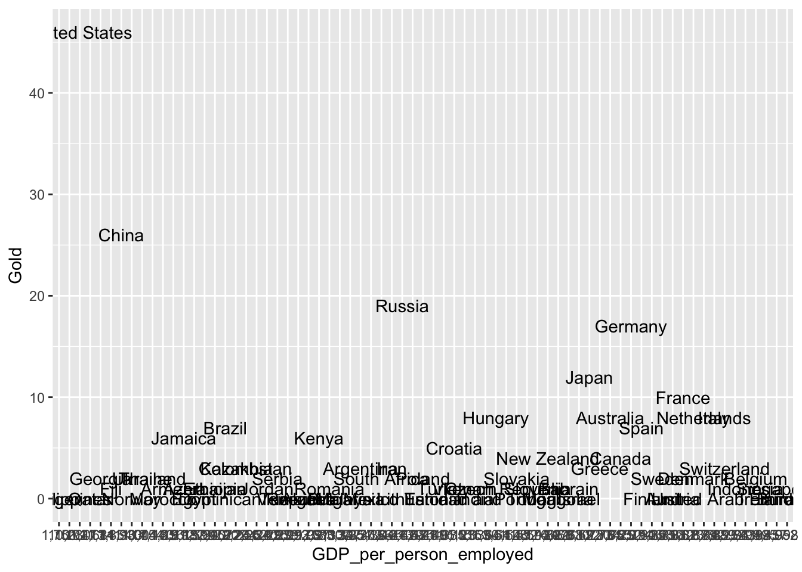
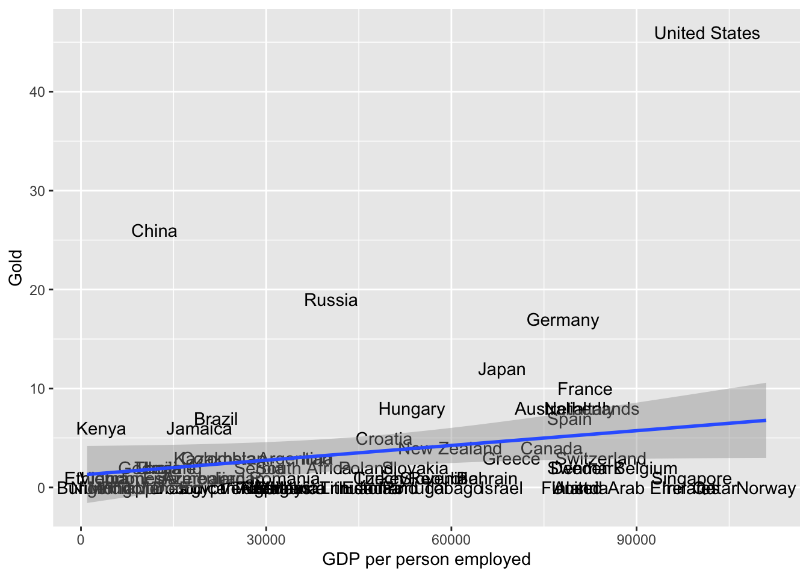

7 Collecting data online
In previous tutorials, we learned how to download datasets online or collect them ourselves using survey software like Qualtrics and to load them into R for analysis. A lot of computational social science data, however, doesn’t come in such easily downloadable form. This is for a couple reasons. For one, companies might provide their data for viewing on a webpage rather than in a .csv or .dta file. Wikipedia, for example, contains thousands and thousands of data tables, concerning topics from GDP per capita by country to the number and types of awards won by Kanye West. These data are publicly available in the form of tables on their various webpages; but there is no single place where you can download all of them. We therefore will need to learn how to grab this data off their webpages using something called web scraping or crawling in R. This is, in part, what Google uses to index the content of websites and offer them to you following your searches.
Alternatively, the amount of data that a website provides might just be too large or too heterogenous to reasonably put into a single, downloadable file or else webistes might have privacy and intellectual property concerns, which preclude them from making all of their data easily available to everyone. In such situations, a webiste or organization might provide a tool for accessing their data in an approved fashion, often referred to as an application programming interface (API).
In tutorial, we will learn the aforementioned skills for collecting online data - web scraping and using APIs. Each website and API is different, so the tutorials presented here might not always apply precisely to every use case, but the basic principles should help get you started collecting digital trace data.
7.1 Scraping the web
In the first portion of this tutorial, we will cover web scraping. Web scraping involves pulling the underlying code – HTML, CSS, or Javascript – of website and interpreting or collecting information embedded in that code. When you visit a website, your browser reads the HTML, CSS, and Javascript and through interpreting them, learns how to display that website. HTML defines the meaning and structure of web content, while CSS (Cascading Style Sheets) and Javascript in turn define how that content appears and behaves, respectively.
One of the best packages in R for webscraping is rvest. In particular, it focuses on pulling data from html web pages and has a number of functions for doing so. You could build a program which grabs the HTML from websites and searches through it for information, but it would be very difficult. rvest has done the difficult work for you.
Let’s begin by installing rvest.
install.packages("rvest")Now we can load it into R. Let’s load in tidyverse too.
library(rvest)##
## Attaching package: 'rvest'## The following object is masked from 'package:readr':
##
## guess_encodinglibrary(tidyverse)Great! If you want to read more about rvest beyond what is covered here, check out its reference manual online: https://cran.r-project.org/web/packages/rvest/rvest.pdf
The core function in rvest for grabbing the html data from a website is html(). We will use it to grab data from Wikipedia about the GDP per person employed. We could grab any webpage using this function and it is worth exploring on your own time.
webpage <- read_html("https://en.wikipedia.org/wiki/List_of_countries_by_GDP_(PPP)_per_person_employed")
webpage## {html_document}
## <html class="client-nojs" lang="en" dir="ltr">
## [1] <head>\n<meta http-equiv="Content-Type" content="text/html; charset=UTF-8 ...
## [2] <body class="mediawiki ltr sitedir-ltr mw-hide-empty-elt ns-0 ns-subject ...Cool! With the HTML in our R environment, we can now use other functions to extract information from it. How do we do that?
Well first, we have to know what function to use. There are quite a few - for example, html_attr extracts text or tag names, html_nodes extracts sections or divisions of the html file by name or type, html_table extracts tables inside of sections, and html_text extracts text.
Once we know the function that we need to use, then we have to figure out what we want to pull from the html.
- Go to our URL: https://en.wikipedia.org/wiki/List_of_countries_by_GDP_(PPP)_per_person_employed
- Find the table to extract.
- Right-click the table -> click Inspect
- On the right-hand side, a pop-up menu will show and you will need to select the table element
- Right-click the table element -> Copy -> Copy Xpath
We can then use html_nodes with the xpath argument set to the copied Xpath to extract just the html information for the table of interest.
webpage_table_html <-html_nodes(webpage, xpath='//*[@id="mw-content-text"]/div[1]/table/tbody/tr[2]/td[1]/table')
webpage_table_html## {xml_nodeset (1)}
## [1] <table class="wikitable sortable" style="margin-left:auto;margin-right:au ...The problem is that the table is still in html format - thankfully, rvest has a function, html_table, which converts such information into an R data.frame. It saves each table in the html as a data.frame inside of a single list, so we will have to index the list we want. In this case, there is only one table on the page so we will index the first item of the list.
gdp_info <- html_table(webpage_table_html, fill = T, trim = T)
class(gdp_info)## [1] "list"gdp_info <- gdp_info[[1]]There isn’t much we can do with a single column of data like this. So what if we scraped data about countries from another Wikipedia page and merged it to this one? For example, we could evaluate if GDP per hour worked (which implicitly adjusts for country size and captures hourly returns to labor) is correlated with how a country performed at the 2016 Olympic games.
First let’s grab the info just like we did before.
# Grab the html
olympics_webpage <- read_html("https://en.wikipedia.org/wiki/2016_Summer_Olympics_medal_table")
# Extract the table
olympics_webpage_table_html <-html_nodes(olympics_webpage, xpath='//*[@id="mw-content-text"]/div[1]/table[3]')
# Convert the table to a data.frame
medals_info <- html_table(olympics_webpage_table_html, fill = T, trim = T)
medals_info <- medals_info[[1]]Then let’s inspect the data. Does it look like it can be easily merged with our GDP data? Perhaps, but there is one problem. The country names on the Olympics page have abbreviations next to them.. this will probably trip up R.
head(medals_info)## # A tibble: 6 × 6
## Rank NOC Gold Silver Bronze Total
## <chr> <chr> <int> <int> <int> <int>
## 1 1 United States (USA) 46 37 38 121
## 2 2 Great Britain (GBR) 27 23 17 67
## 3 3 China (CHN) 26 18 26 70
## 4 4 Russia (RUS) 19 17 20 56
## 5 5 Germany (GER) 17 10 15 42
## 6 6 Japan (JPN) 12 8 21 41One option is to try and remove those parentheses from the country names. A strategy for doing that is to split each country name into each of its respective characters, identify which of the characters is a (forward facing?) parenthesis, and to keep only the set of characters which come before that parenthesis. Then we paste all of our country names back together.
To split strings, we can use the strsplit() function which comes with base R.
split_countries <- strsplit(medals_info$NOC, "")
head(split_countries)## [[1]]
## [1] "U" "n" "i" "t" "e" "d" " " "S" "t" "a" "t" "e" "s" " " "(" "U" "S" "A" ")"
##
## [[2]]
## [1] "G" "r" "e" "a" "t" " " "B" "r" "i" "t" "a" "i" "n" " " "(" "G" "B" "R" ")"
##
## [[3]]
## [1] "C" "h" "i" "n" "a" " " "(" "C" "H" "N" ")"
##
## [[4]]
## [1] "R" "u" "s" "s" "i" "a" " " "(" "R" "U" "S" ")"
##
## [[5]]
## [1] "G" "e" "r" "m" "a" "n" "y" " " "(" "G" "E" "R" ")"
##
## [[6]]
## [1] "J" "a" "p" "a" "n" " " "(" "J" "P" "N" ")"It returns a list. So in future analyses, we will use the lapply() function to apply the same function to each element in the list.
Let’s write our first function. It takes a vector (x), looks for a parenthesis, if there is one in x, then it limits x to only those items in the vector which came 2 before the parenthesis.
keep_before_parenthesis <- function(x){
# identify parenthesis location
parenthesis_location <- which(x == "(")
# if there is no parenthesis location (length == 0), then just output the original vector
if(length(parenthesis_location) == 0){
return(x)
} else { # otherwise
# set the end point of x to be 2 before the location of the parenthesis
end_point <- parenthesis_location-2
# and index x
x <- x[1:end_point]
}
# output the new x
return(x)
}We apply this function to every item in the split_countries list with lapply
split_countries <- lapply(split_countries, keep_before_parenthesis)
head(split_countries)## [[1]]
## [1] "U" "n" "i" "t" "e" "d" " " "S" "t" "a" "t" "e" "s"
##
## [[2]]
## [1] "G" "r" "e" "a" "t" " " "B" "r" "i" "t" "a" "i" "n"
##
## [[3]]
## [1] "C" "h" "i" "n" "a"
##
## [[4]]
## [1] "R" "u" "s" "s" "i" "a"
##
## [[5]]
## [1] "G" "e" "r" "m" "a" "n" "y"
##
## [[6]]
## [1] "J" "a" "p" "a" "n"Now let’s paste them all back together. paste0 with the collapse argument specified with collapse all of the strings in a vector into one string separated by whatever character follows the collapse argument.
split_countries <- lapply(split_countries, function(x) paste0(x, collapse = ""))
head(split_countries)## [[1]]
## [1] "United States"
##
## [[2]]
## [1] "Great Britain"
##
## [[3]]
## [1] "China"
##
## [[4]]
## [1] "Russia"
##
## [[5]]
## [1] "Germany"
##
## [[6]]
## [1] "Japan"We can use unlist to convert this list into a vector.
split_countries <- unlist(split_countries)
head(split_countries)## [1] "United States" "Great Britain" "China" "Russia"
## [5] "Germany" "Japan"And we assign the result to the medals_info dataset
medals_info$Country <- split_countriesNow that both datasets have the same way of writing country names, we can merge the data by Country.
merged_df <- merge(gdp_info, medals_info, by = "Country")
head(merged_df)## Country Rank.x GDP per personemployed(current Intl. $)
## 1 Algeria 64 29,997
## 2 Argentina 56 34,772
## 3 Armenia 82 18,812
## 4 Australia 22 75,855
## 5 Austria 16 80,982
## 6 Azerbaijan 79 19,890
## Employed /total pop.(%) Year Rank.y NOC Gold Silver Bronze Total
## 1 28.0 2010 63 Algeria (ALG) 0 2 0 2
## 2 41.9 2009 27 Argentina (ARG) 3 1 0 4
## 3 32.4 2008 42 Armenia (ARM) 1 3 0 4
## 4 50.3 2010 10 Australia (AUS) 8 11 10 29
## 5 49.4 2010 78 Austria (AUT) 0 0 1 1
## 6 47.4 2009 39 Azerbaijan (AZE) 1 7 10 18And we can plot results using ggplot, just like we did in our first R lesson! First, let’s select the columns we want and rename column 2 so it is easy to access with ggplot.
merged_df <- merged_df[,c(1,3,8)]
colnames(merged_df)[2] <- "GDP_per_person_employed"Now let’s plot.
ggplot(merged_df, aes(x = GDP_per_person_employed,
y = Gold,
label = Country)) +
geom_text() +
geom_smooth(method='lm', formula= y~x)
This plot is terrible! What is up with the x-axis? It doesn’t seem to be detecting either axis as numbers. Let’s convert them using as.numeric so that R doesn’t get confused again. There is a problem though.. the GDP values have commas in them. R won’t recognize them as potential numbers and will return NA when we run as.numeric. We can use the gsub function to substitute things in a string for something else. Let’s use it to remove the commas by substituting commas with empty strings.
merged_df$GDP_per_person_employed <- gsub(",", "", merged_df$GDP_per_person_employed)Now we should be able to use as.numeric and plot the results.
merged_df$GDP_per_person_employed <- as.numeric(merged_df$GDP_per_person_employed)ggplot(merged_df, aes(x = GDP_per_person_employed,
y = Gold,
label = Country)) +
geom_text() +
geom_smooth(method='lm', formula= y~x) +
xlab("GDP per person employed")
Clearly GDP per person is not the only factor that affects which country will win the most golds at the Olympics. What important variables are we missing?